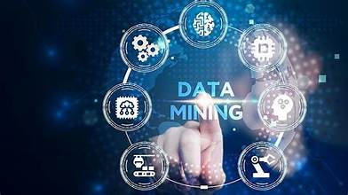

Unlocking Business Potential with Data Mining
Published on: January 10, 2025
Introduction
In today’s digital era, data is the new currency. Businesses are collecting vast amounts of data every day, but the true value lies in how this data is utilized. Data mining, the process of discovering patterns, correlations, and trends from large datasets, is becoming a cornerstone of business strategies. By tapping into the power of data mining, businesses can gain actionable insights that drive informed decisions, optimize operations, and fuel growth.
What is Data Mining?
Data mining is the process of analyzing large datasets to identify hidden patterns and trends. It uses various techniques, including machine learning, statistics, and database systems, to extract meaningful information. The goal is to convert raw data into valuable insights that can inform business strategies and decisions.
Key Benefits of Data Mining in Business
- Enhanced Decision-Making: By analyzing historical data, data mining enables businesses to make more informed decisions. Patterns and trends identified through data mining can guide strategic actions, improving decision-making accuracy.
- Customer Segmentation and Personalization: Data mining helps businesses segment their customer base more effectively. By identifying distinct customer behaviors and preferences, companies can create personalized marketing campaigns, improving customer engagement and loyalty.
- Fraud Detection and Risk Management: Data mining plays a critical role in identifying anomalies and fraudulent activities. By analyzing transaction data in real-time, businesses can detect suspicious patterns early, minimizing financial risks and enhancing security.
- Operational Efficiency: Through the analysis of operational data, businesses can identify inefficiencies, bottlenecks, and areas for improvement. This helps optimize supply chains, inventory management, and production processes, ultimately improving the bottom line.
How Data Mining is Transforming Industries
- Retail: Retailers are using data mining to predict shopping trends, optimize inventory levels, and create personalized recommendations for customers. These insights help increase sales, reduce costs, and improve customer satisfaction.
- Finance: Financial institutions leverage data mining for credit scoring, fraud detection, and market prediction. By identifying patterns in financial data, banks can improve risk management and customer service.
- Healthcare: Data mining in healthcare helps identify disease outbreaks, predict patient outcomes, and enhance treatment plans. By analyzing patient data, healthcare providers can deliver personalized care and optimize resource allocation.
- Manufacturing: Data mining in manufacturing helps companies predict machine failures, optimize production schedules, and improve quality control. This results in reduced downtime, higher product quality, and lower costs.
Challenges in Data Mining
- Data Quality and Cleanliness: For data mining to be effective, businesses must ensure their data is accurate, consistent, and clean. Poor-quality data can lead to misleading insights and poor decision-making.
- Privacy Concerns: As businesses gather more data, the risk of breaching customer privacy increases. Ensuring that data is anonymized and that privacy laws are adhered to is essential for maintaining customer trust.
- Integration with Existing Systems: Integrating data mining tools with existing IT infrastructure can be complex. Businesses need to invest in compatible systems and skilled professionals to unlock the full potential of data mining.
The Future of Data Mining in Business
As technology continues to evolve, data mining will become even more sophisticated. Advanced AI and machine learning techniques will enhance the ability to analyze unstructured data, such as text and images. Additionally, the growing use of big data and cloud computing will provide businesses with even more powerful tools to extract actionable insights.
In the future, data mining will not only provide businesses with real-time insights but also predict future trends and behaviors, enabling organizations to stay ahead of the curve.
Conclusion
Data mining is revolutionizing how businesses operate. By uncovering hidden insights within data, businesses can optimize operations, personalize customer experiences, and make more strategic decisions. As organizations continue to embrace data mining, they will unlock new opportunities for growth, innovation, and efficiency. The future of business will increasingly depend on how well companies leverage data to drive success in a data-driven world.